Rodei o site neste computador com 53 militares fictícios, montei uma escala do zero e fotografei cada tela em três tamanhos: monitor (1440 px), notebook (1366 × 768) e celular (390 px). Tudo o que está aqui foi medido nas telas ou contado no código, em 23/11/2026.
As fotos mostram só dados de exemplo (matrículas 990xxx). O que fazer com cada achado está na especificação citada no fim.
| Medida | Valor | Onde |
|---|---|---|
| Altura da Escala do mês com uma guarnição só | 8.730 px | Quase dez telas de rolagem num monitor de 900 px |
| Botões "Remover" na mesma página | 542 | Cada um com 17 px de altura |
| Dias do mês à vista na Grade geral | 17 de 30 | Com o painel do dia aberto, 9; no celular, 3 |
| Botões de salvar na ficha do militar | 5 | Um por bloco; a ficha tem 2.177 px de altura |
| Largura de Configurações no celular | 818 px | Numa tela de 390 px: a página inteira rola de lado |
| Ações para sair do zero e gerar a primeira escala | 17 | Em 4 telas, com 5 botões de salvar diferentes |
| Confirmações feitas pela caixa do navegador | 11 | Remover militar, desativar, descartar alterações |
| "Carregando…" escrito em texto | 34 | Nenhuma tela guarda o lugar do que vai aparecer |
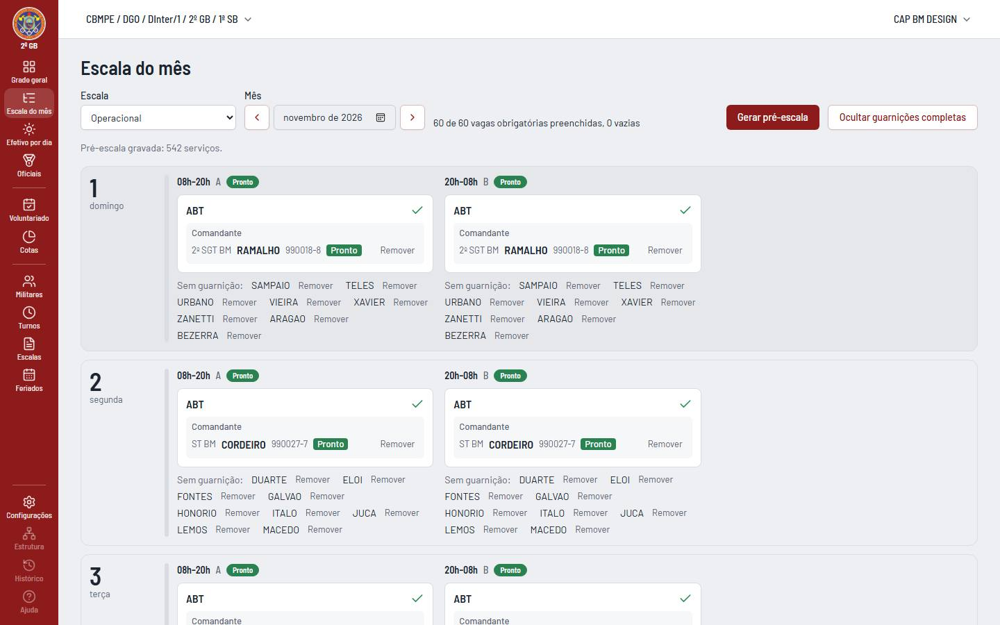
1234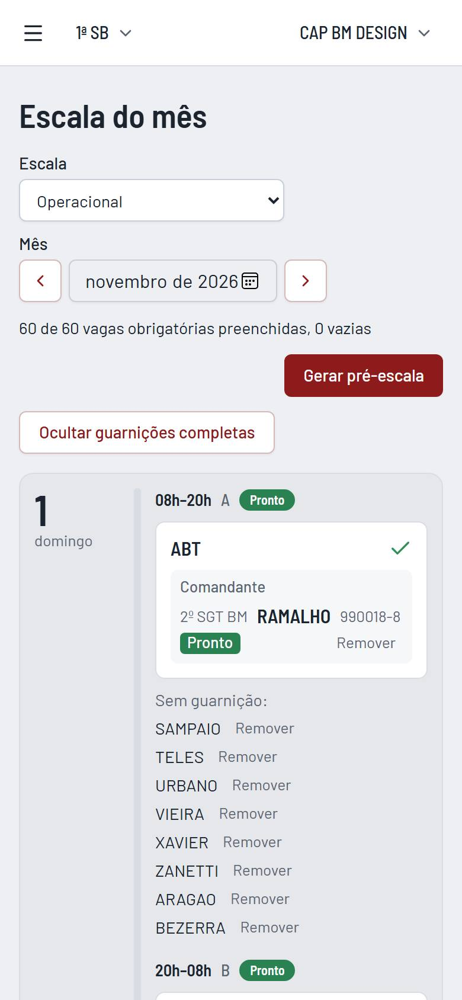
12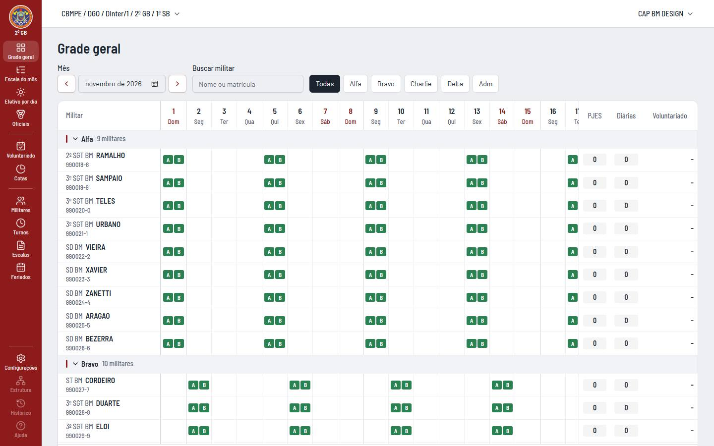
1234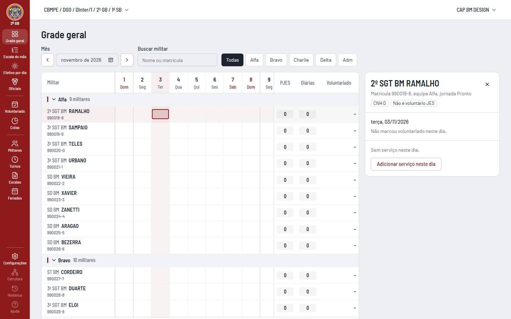
12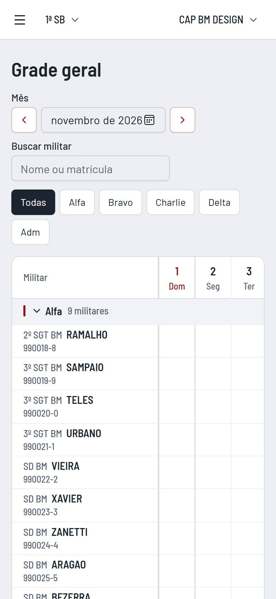
12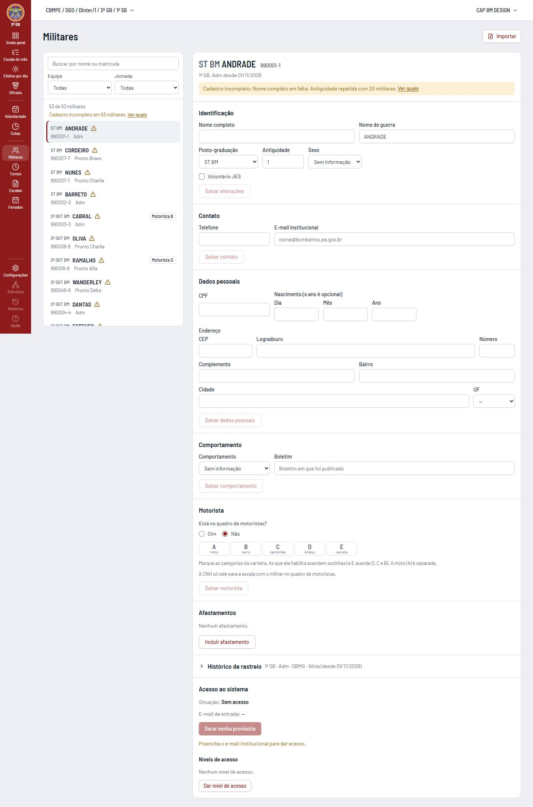
111112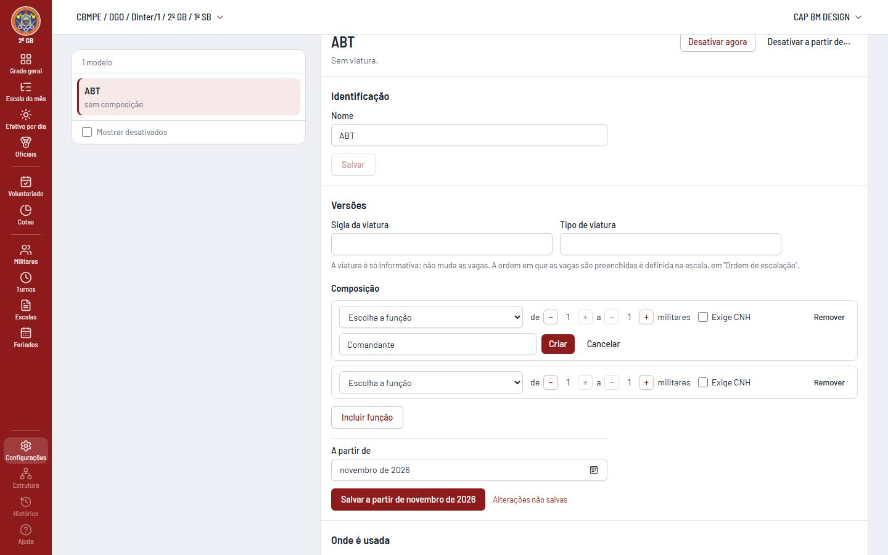
1234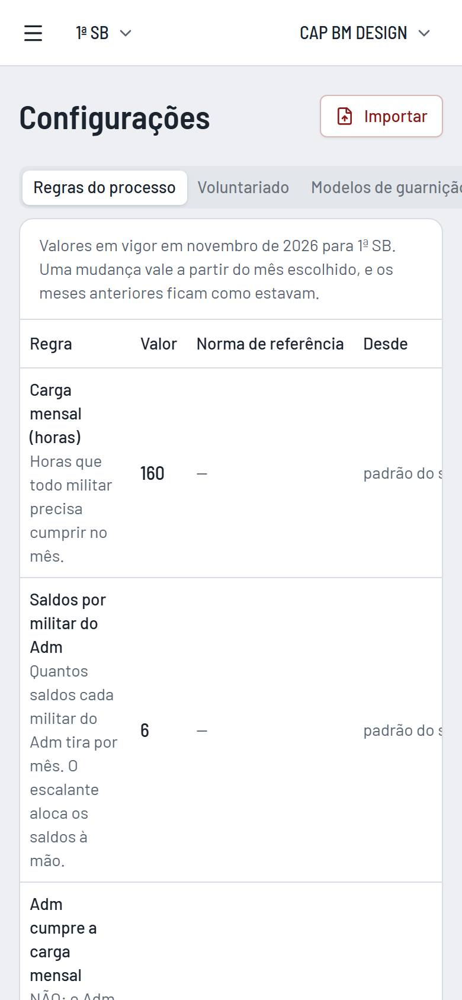
123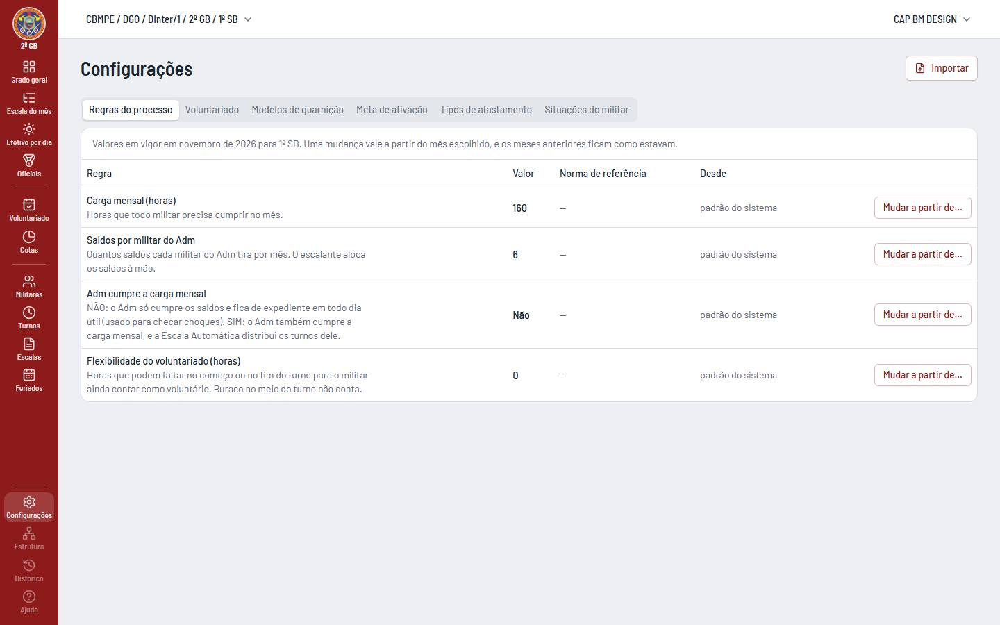
12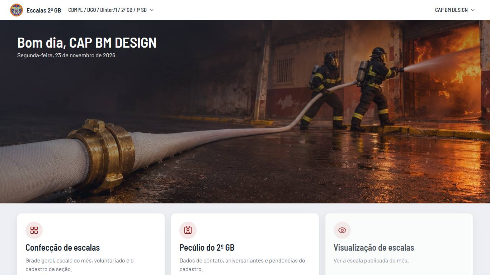
12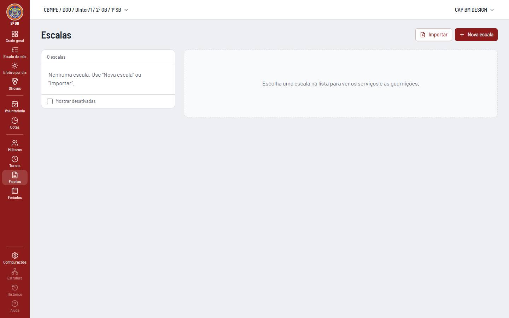
12Para sair de uma seção vazia e chegar à primeira escala gerada, o caminho que percorri foi este. Nenhuma tela mostra a ordem:
O site junta os padrões da biblioteca de componentes, as cores e fontes do projeto e valores escritos à mão em cada tela. Por isso telas parecidas se comportam de jeitos diferentes.
| O que varia | Quantos | Exemplo |
|---|---|---|
| Cores escritas à mão, fora da paleta | 13 | Três cinzas quase iguais (#F6F7F9, #F7F7F8, #EEF0F3) e quatro rosados |
| Tamanhos de letra fora da escala | 9 | 10, 11, 11,5, 12,5, 13, 15, 28, 32 e 40 px; o título da página é repetido à mão em 13 arquivos |
| Arredondamentos de canto | 5 | Sem regra de qual vale para quê |
| Sombras | 8 | De shadow-xs a duas sombras desenhadas à mão |
| Contornos de foco | 2 | Um do projeto e um da biblioteca, às vezes os dois juntos |
| Lugar dos filtros e das ações | 3 | Soltos no fundo, dentro de um quadro, ou no alto à direita |
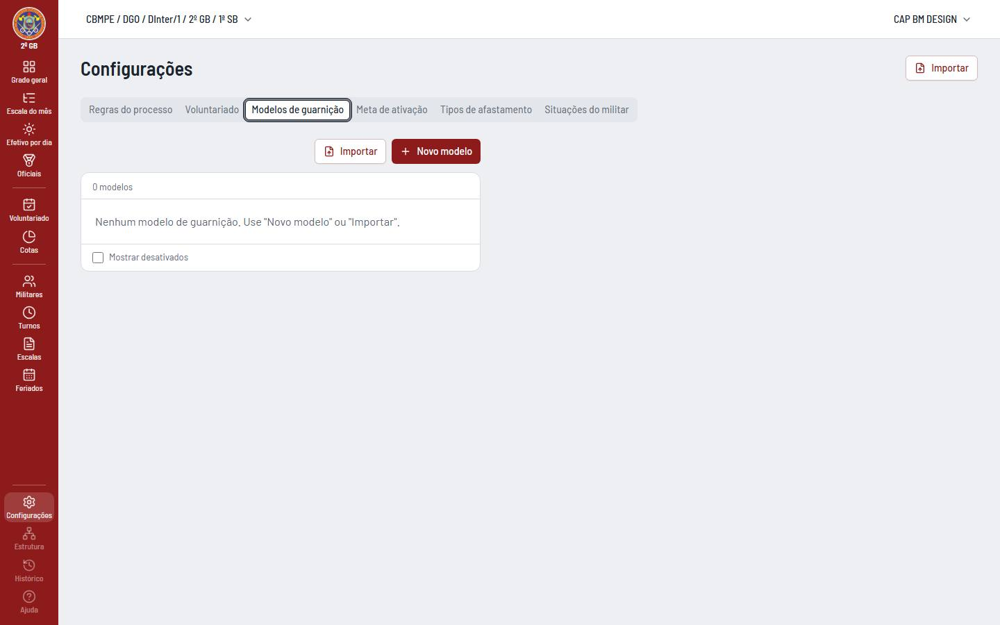
1Proposta para a sua decisão. Nada desta parte está aprovado nem desenhado em tela.
Manter a identidade e refazer o sistema por baixo dela. A referência é o quadro de serviço do quartel: nomes em placas, vagas como encaixes, e o que falta visível de longe.
A placa do militar com a cor do serviço na borda, o encaixe obrigatório em âmbar e o opcional em cinza. O mesmo desenho valeria na Grade, na Escala do mês, no Efetivo e na lista de escolha.
Seis tamanhos no lugar dos dezessete de hoje. As famílias continuam as mesmas.
A mesma moldura em todas as telas: título, filtros, ação principal e resposta do sistema sempre no mesmo lugar.
O texto completo, com as necessidades de implementação e as decisões em aberto, está no repositório: docs/superpowers/specs/2026-11-23-refatoracao-da-interface-design.md.